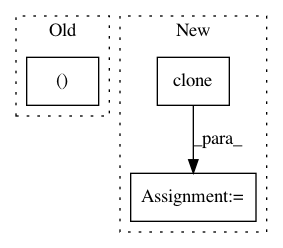

1f3da600c20e3376b0bb396bba482b1e90b7883c,i3nception_tf.py,,,#,34
Before Change
out3d = unitpy(input_3d_var)
filter_idx = 5
py_out = py_to_tf_reshape(
out3d.data.numpy())[0][0][:, :, filter_idx].copy()
tf_out = tf_out3dsample[0][0][:, :, filter_idx].copy()
import pdb
pdb.set_trace()
After Change
target_var = torch.autograd.Variable(target)
// Pytorch forward pass
input_3d = input_2d.clone().unsqueeze(2).repeat(1, 1, frame_nb, 1, 1)
input_3d_var = torch.autograd.Variable(input_3d)
feed_dict = {}
input_3d_tf = input_3d.numpy().transpose(0, 2, 3, 4, 1) //
feed_dict[rgb_input] = input_3d_tf
// Get output
tf_out3dsample = sess.run(rgb_logits, feed_dict=feed_dict)
out_tf_np = tf_out3dsample.transpose((0, 4, 1, 2, 3))
out_tf = torch.from_numpy(out_tf_np)
unit_name_tf = "RGB/inception_i3d/Conv3d_1a_7x7/"
// Create state_dict
state_dict = {}
i3nception.load_conv3d(state_dict, "", sess, unit_name_tf)
unitpy.eval()
unitpy.load_state_dict(state_dict)
out_pt = unitpy(input_3d_var).data
out_pt_np = out_pt.numpy()
filter_idx = 0
// Plot slices
filter_idx = 0
img_tf = out_tf_np[0][filter_idx][0]
img_pt = out_pt_np[0][filter_idx][0]
max_v = max(img_tf.max(), img_pt.max())
min_v = min(img_tf.min(), img_pt.min())
plt.subplot(2, 2, 1)
In pattern: SUPERPATTERN
Frequency: 4
Non-data size: 3
Instances
Project Name: hassony2/kinetics_i3d_pytorch
Commit Name: 1f3da600c20e3376b0bb396bba482b1e90b7883c
Time: 2017-11-24
Author: yana.hasson@inria.fr
File Name: i3nception_tf.py
Class Name:
Method Name:
Project Name: explosion/thinc
Commit Name: 3c7d4d1240103e4c06a0110b00e11b7e1002dd0e
Time: 2020-01-12
Author: honnibal+gh@gmail.com
File Name: thinc/layers/lstm.py
Class Name:
Method Name: LSTM
Project Name: mapillary/inplace_abn
Commit Name: 4d721c8fe97723d5d0a32e8e6f10cf14c6800e92
Time: 2018-11-29
Author: samuel@mapillary.com
File Name: modules/functions.py
Class Name: InPlaceABNSync
Method Name: backward
Project Name: Zhaoyi-Yan/Shift-Net_pytorch
Commit Name: d2c500803a9d7141a3933d0f4804d9635cd7bfc6
Time: 2018-12-13
Author: yanzhaoyi@outlook.com
File Name: models/soft_shift_net/innerSoftShiftTripleModule.py
Class Name: InnerSoftShiftTripleModule
Method Name: forward